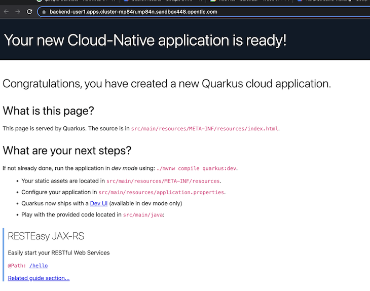
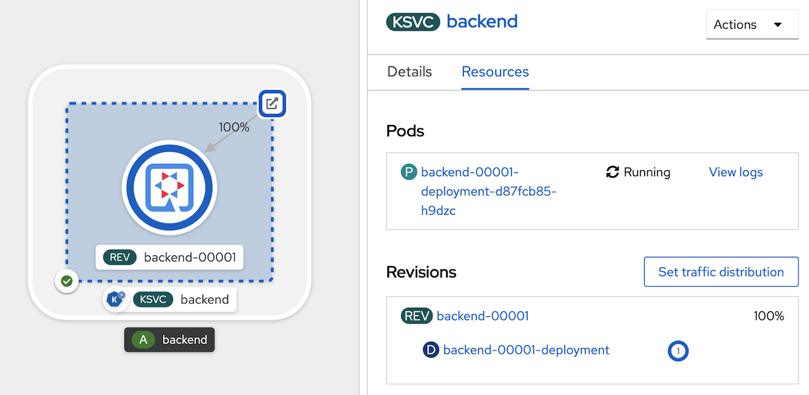

Basic Serverless, auto scale up & scale down by request
Prerequisite
- Complete Deploy application to openshift with s2i
- Go to your project (same as your username)
- Open Web Terminal by click '>_' on top of OpenShift Web Console
- use web terminal to run command line
Change your application to Serverless
From Topology view, open web terminal, delete route, service and deployment of backend with below command (change project name to your project name such as 'userx')
oc project user1 oc delete route/backend oc delete service/backend oc delete deployment/backendredeploy application again with openshift serverless (serving) feature, click Add+ in left menu, select deploy from container images
in image section, select Image stream tag from internal registry, select project 'userx' (your username), image stream 'backend' and Tag 'latest'
- in general section, set Application name: 'backend', Name: 'backend'
- in resources seciton, select 'Serverless Deployment'

- for advanced options, leave all default, click create

- wait until deploy complete, click KSVC 'backend'
- test backend application click route icon to open application in new tab 
- wait until application auto scale down (1 minute)

- in topology view, no pod start and deployment show 0 pod
- test call application again by click route, serverless will automatic start pod. 